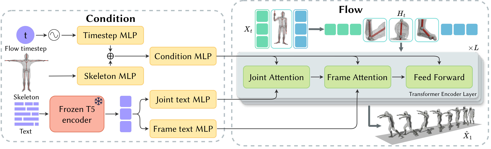
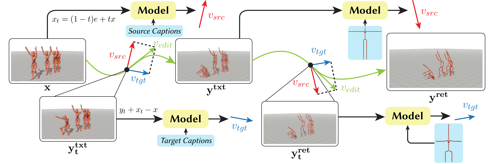
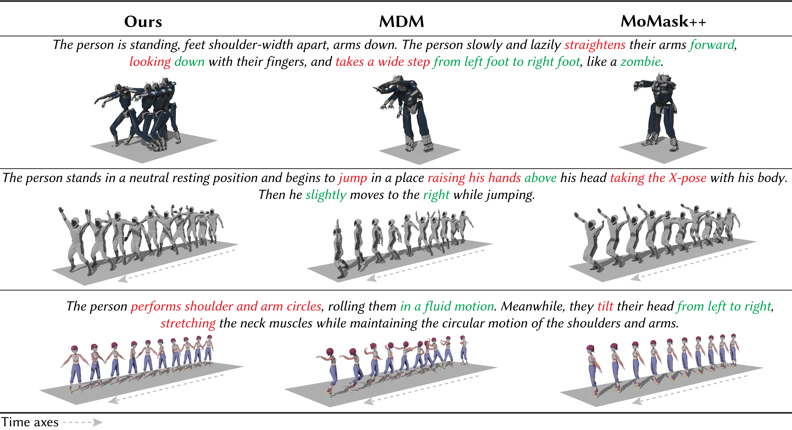
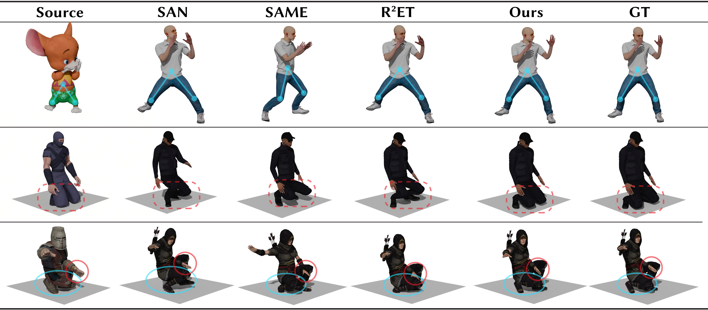

A Unified Conditional Flow for Motion Generation, Editing, and Intra-Structural Retargeting
Abstract
Text-driven motion editing and intra-structural retargeting, where source and target share topology but may differ in bone lengths, are traditionally handled by fragmented pipelines with incompatible inputs and representations: editing relies on specialized generative steering, while retargeting is deferred to geometric post-processing. We present a unifying perspective where both tasks are cast as instances of conditional transport within a single generative framework. By leveraging recent advances in flow matching, we demonstrate that editing and retargeting are fundamentally the same generative task, distinguished only by which conditioning signal, semantic or structural, is modulated during inference. We implement this vision via a rectified-flow motion model jointly conditioned on text prompts and target skeletal structures. Our architecture extends a DiT-style transformer with per-joint tokenization and explicit joint self-attention to strictly enforce kinematic dependencies, while a multi-condition classifier-free guidance strategy balances text adherence with skeletal conformity. Experiments on SnapMoGen and a multi-character Mixamo subset show that a single trained model supports text-to-motion generation, zero-shot editing, and zero-shot intra-structural retargeting. This unified approach simplifies deployment and improves structural consistency compared to task-specific baselines.
Methods & Results

Model Architecture. Input frame tokens are reshaped into per-joint tokens for processing. Time and skeleton conditions are injected via AdaLN, while text embeddings are integrated through cross-attention.

Applications of our unified inference scheme. Left: text-based editing by changing the text condition. Right: retargeting by changing only the skeleton condition. Both use the same pre-trained model and an inversion-free update rule, where the edit velocity is obtained by combining velocity predictions under different conditions.

Qualitative comparison on text-to-motion generation. For visualization, motions with little or no root translation are manually time-shifted. Prompt words in red denote actions, while words in green indicate motion modifiers.

Qualitative retargeting comparison. We compare against SAN, SAME, and R2ET. The proposed method better preserves fine-grained local motion and adapts to varying skeleton proportions.

Qualitative results on text-based motion editing. Edited prompt words are highlighted in red and green. For visualization, motions shifted.
Video Presentation
Videos
Text-to-Motion Generation
Text-based Editing
Intra-Structural Retargeting
Paper
BibTeX
@misc{li2026unifiedconditionalflowmotion,
title={A Unified Conditional Flow for Motion Generation, Editing, and Intra-Structural Retargeting},
author={Junlin Li and Xinhao Song and Siqi Wang and Haibin Huang and Yili Zhao},
year={2026},
eprint={2604.13427},
archivePrefix={arXiv},
primaryClass={cs.GR},
url={https://arxiv.org/abs/2604.13427},
}